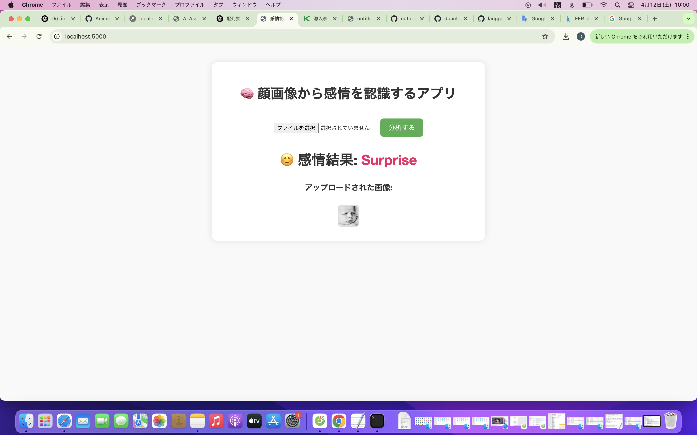
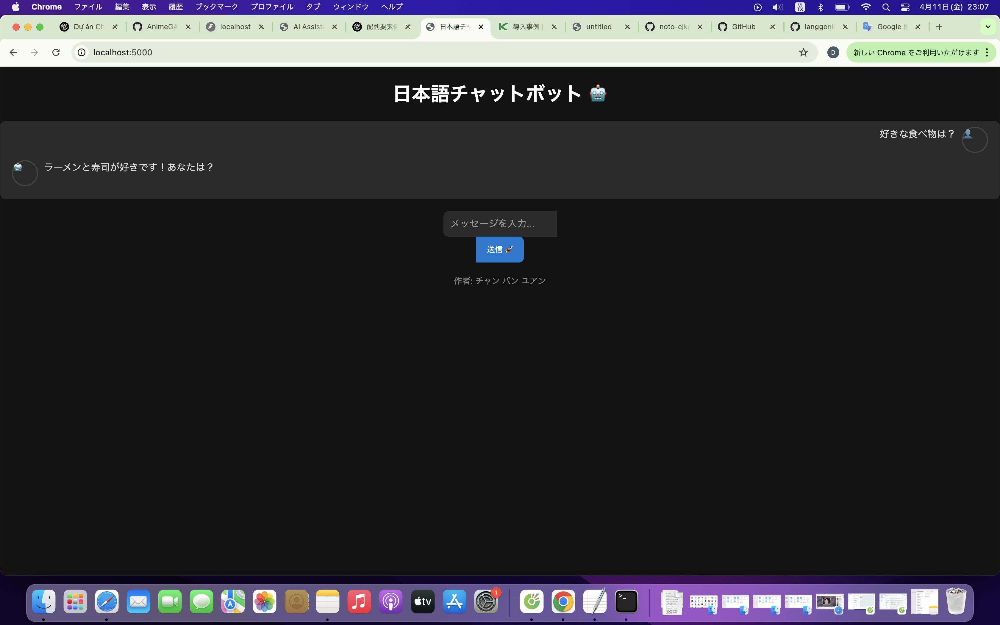

自己紹介
初めまして！
私はベトナムのハイフォン市で生まれ、市内の小・中・高を卒業後平成23年9月ベトナムの労働組合大学に進学しました。
大学では主に会計学について学んでいましたが途中でITの専門知識を学びたいと考えるようになり、平成24年9月ベトナムのハノイ大学情報技術学部情報技術学科に編入し、平成28年6月学士（情報技術学)学位を得て卒業しました。
その後、もともと興味がある日本でITの専門知識を生かして働きたいと考え、平成28年10月渡日し、都内の日本語学校に入学しました。日本語を１年間学んだ後平成29年11月ソフトウエア開発を手掛ける会社に就職し、4度の転職を経て，現在AIの技術について自己学習や個人開発を実行しております。
志望動機
私は以前からAI技術に強い関心を持ち、特に機械学習やディープラーニングの分野において自己学習を続けてまいりました。大学（または独学）ではPython、TensorFlow、PyTorchを用いたデータ分析やモデル構築に取り組み、
基礎的な理論から実装まで学んでおります。また、オープンソースのプロジェクトや個人開発を通じて、実際にデータを処理し、モデルを改善する経験も積んでまいりました。
貴社の募集要項を拝見し、実務経験が少ないながらも、AI技術への強い熱意と継続的な学習意欲を活かせる環境だと感じました。特に、貴社が取り組んでいる〇〇（例：自然言語処理、画像認識、推薦システムなど）に興味があり、今後さらに専門知識を深め、貴社のプロジェクトに貢献したいと考えております。
実務経験は限られておりますが、新しい技術を素早くキャッチアップし、実践に活かす能力には自信があります。これまでの学習や開発経験を活かし、貴社の一員として成長しながらAI技術の発展に貢献できるよう努力いたします。何卒よろしくお願いいたします。
プロジェクト
📊 感情認識Webアプリ（Flask + TensorFlow）
ユーザーが画像をアップロードすると、事前に学習されたモデルが画像内の表情を分析し、「怒り」「悲しみ」「喜び」など7種類の感情を分類するFlaskベースのWebアプリです。
TensorFlow/KerasでFER2013データセットを使ってCNNを学習し、リアルタイムで感情を検出。履歴をCSVファイルに保存できる機能も備えています。
GitHubリポジトリ💬 日本語チャットボット（NLTK + Flask）
日本語での自然なやりとりができる簡易チャットボットです。NLTKを使って文脈に応じた返答を生成し、やりとりはローカルJSONに保存。
ダークモード、タイピングエフェクト、アバター表示など、ユーザー体験を高めるUI要素も実装されています。
GitHubリポジトリスキル
- Python（Flask, TensorFlow, Keras, Numpy, Pandas）
- JavaScript / HTML / CSS / TailwindCSS
- バックエンド：Java / PHP / Ruby
- フロントエンド：Bootstrap / jQuery / Ajax
- データベース：MySQL / PostgreSQL / MongoDB
- オフショア開発管理、上流工程経験、Bridge SE
- 日本語：N2、英語：中級
📬 Contact（連絡先）
📧 メールアドレス
📞 電話番号
080-7614-7448